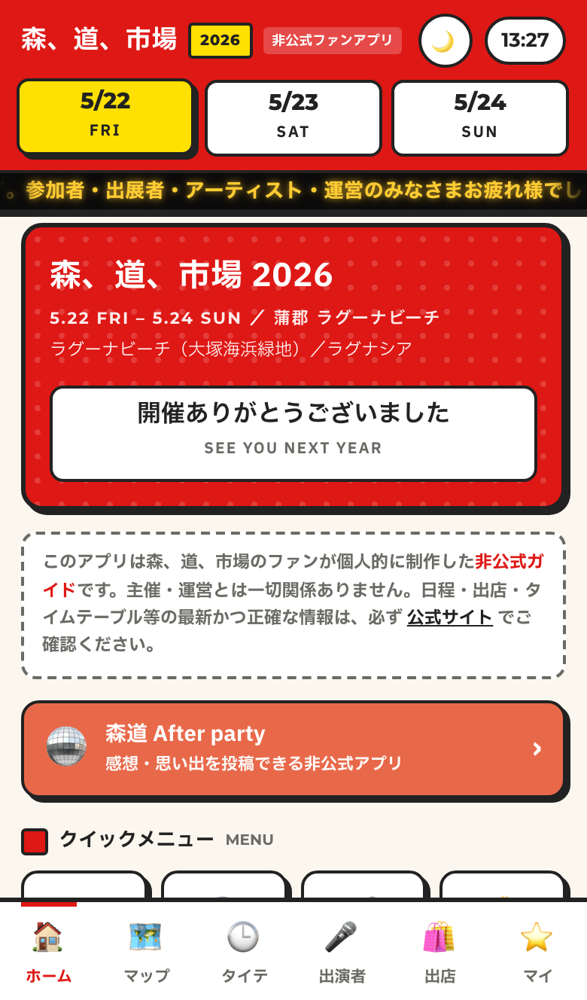
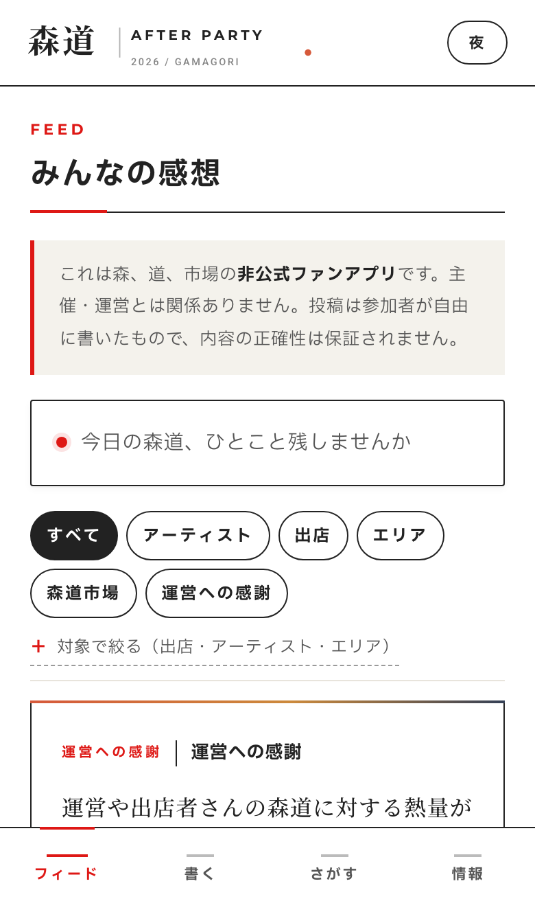

01 — About
ナゴヤ人間とは
名古屋・愛知を素材に書く、独立メディアです。2026年4月創刊。note を本拠地に、X・Threads・Instagram に支線を出しています。
書いてきたのは、森道市場の運営構造、トヨタのEV戦略、減税日本20年の収支、リニア開通後の都市像、「名古屋には何もない」という決まり文句の出所。テーマは横断する。対象は、いつも名古屋・愛知。
「すごい」も「何もない」も、書かない。なぜそうなっているのかを、一段下に降りて読む。
書き方は、三つ。
- 事実から始める（数字・固有名詞・一次情報を当たる）。
- 構造で読む（なぜ、そうなっているのか）。
- 問いで終える（結論は読者に渡す）。
By the numbers
いまの現在地
- 82本 マガジン累計記事
-
4本
マガジン
継続2 ／ 完結2 -
2本
自作アプリ
森道ガイド ／ After party -
4媒体
発信チャネル
note ／ X ／ Threads ／ IG
週に2〜3本、note を更新。SNSには、まだ記事にならない問いを置いています。
02 — マガジン
主要連載
名古屋を、テーマで切り分けた四つの線。すべて note で公開しています。
-
森、道、市場
蒲郡で行われる音楽＋マーケットの祝祭を、運営・招待制・継承の三層で解剖。なぜ毎年人が戻ってくるのかを、設計の側からほどく。
マガジンを開く → -
愛知・名古屋2026アジア大会 特集
2026年の国際スポーツ大会を、費用・地域効果・レガシーの三層で検証した全5話。「開催地から書く」を試みた連載。
マガジンを開く → -
「名古屋には何もない」は本当なのか
名古屋を語るときに繰り返される定型句を、データと構造で解体した全10話。「ない」という認知がどこから来て、なぜ続いているのかを問い直す。
マガジンを開く → -
ナゴヤ政治
減税日本20年、知事と市長の関係、市政の意思決定構造。地域政治を党派ではなく「設計」の視点で読む連載。
マガジンを開く → -
単体記事・特集
「名古屋の15年後を考える」5回連載、スタジアム論、トヨタEV戦略、リニア開通後の都市変容。マガジンに収まりきらなかった単発の考察。
記事一覧へ →
03 — Lab
ナゴヤ人間ラボ
編集の延長線で組んだアプリ。森道市場2026という対象を、文章とは別の角度から扱う。設計から公開まで、書くのと同じ手つきで組みました。

-

App 01
森、道、市場 ガイドアプリ
公式マップPDFと出演者ページを照合し、5/22-24開催の出店535件・出演109組を網羅した非公式ガイド。
- 会場マップ上で店名を3点マーキング。目的の店までの最短ルートを示す
- エリア別・日程別フィルタで、535件の出店と109組の出演者を整理
- 会場の電波が弱くても止まらないよう、オフラインで動く設計に
- 公式マップPDFと出演者ページを照合し、データ整形から座標補正までを自前で実装
-

App 02
森道 After party
森道市場2026を、終わったあとから書き残すための非公式アプリ。来場者が置いていく感想・写真・断片を、開催後も拾い続ける場所。
- 1〜2分で書ける感想フォーム（ニックネーム可、画像も添付可）
- キーワード検索とタグで、来場者の記録を横断して辿れる
- 投稿はクラウド保存。NGワードフィルタとモデレーション設計で場の品位を担保
- 開催中の高揚から、開催後の余韻まで。書ける場所を残し続ける設計